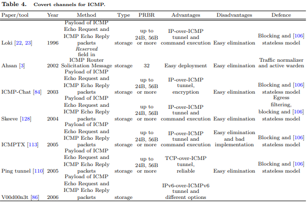

Internet Control Message Protocol (ICMP) is another connectionless protocol on Internet layer, used to
transfer error messages and other information between the nodes. ICMP messages are send encapsulated in IP
packets. There are 14 (and 16 deprecated) different types of ICMP messages, which have common only first 4 byte
of the 8-byte ICMP header. Project Loki [22, 23] demonstrated a covert channel by putting arbitrary information
tunnelling in the payload of ICMP Echo Request and ICMP Echo Reply packets. Additionally, the Loki client
allows a remote attacker to wrap and transmit commands in ICMP payloads and the Loki server, unwraps and
executes the commands, sending the results back wrapped in ICMP packets. This channel will work for any
network device which does not filter the contents of ICMP Echo traffic, and is very simple to deploy.
Other implementations of IP-over-ICMP tunnels are ICMPTX [113], Skeeve [128], ICMP-Chat [84], etc. Their
PRBR depends on operating system and implementation, and can goes up to 24B, 56B or more.
